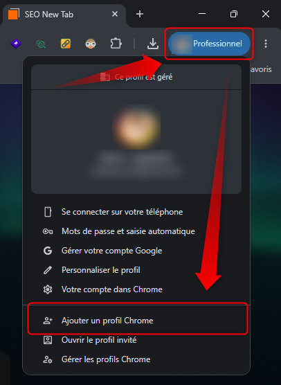
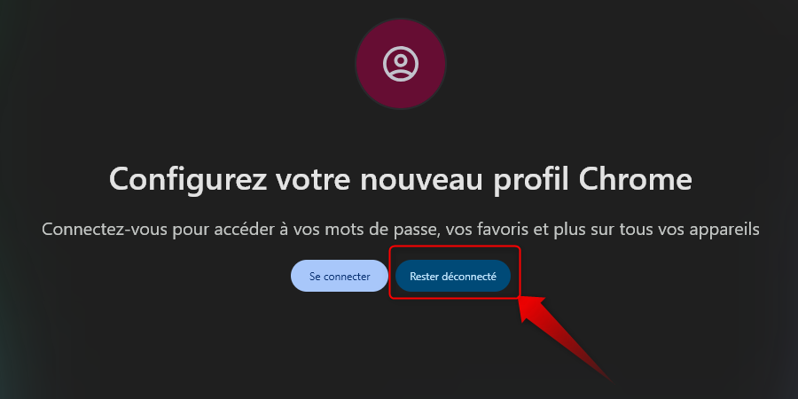
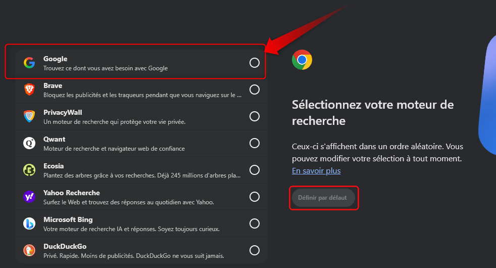
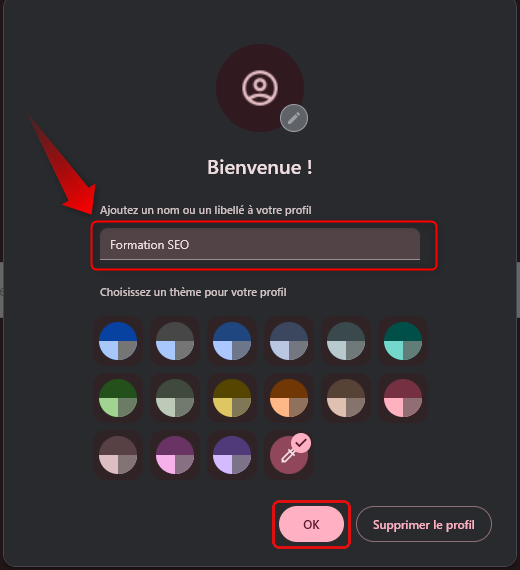
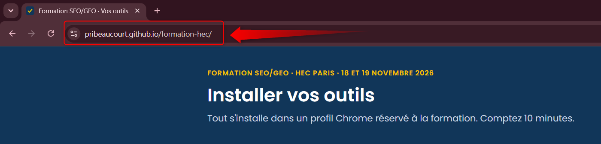
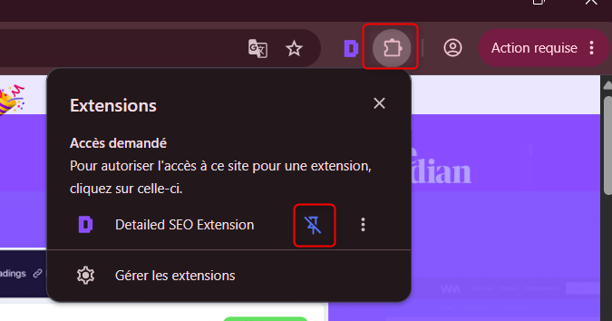

Cette page doit être ouverte dans la fenêtre « Formation SEO ».
Elle a la couleur choisie pour ce profil à l'étape 4. Si vous n'avez pas encore créé le profil, commencez par l'étape 1.
1Créer le profil « Formation SEO »
Une extension peut lire tout ce qui s'affiche dans la fenêtre où elle est installée. Le profil à part la tient éloignée de votre messagerie, de l'intranet et de OneDrive. C'est la consigne de la DSI de HEC.
Cliquez sur le bouton de votre profil, en haut à droite de Chrome, puis sur Ajouter un profil Chrome.

Cliquez sur Rester déconnecté. Dans ce profil, ne vous connectez ni à Google ni à votre compte HEC.

Choisissez Google comme moteur de recherche, puis cliquez sur Définir par défaut. Les moteurs s'affichent dans un ordre aléatoire : cherchez Google dans la liste.

Tapez Formation SEO dans le champ du nom, choisissez une couleur, puis cliquez sur OK. Ne cliquez pas sur « Supprimer le profil ».

La fenêtre du profil « Formation SEO » est ouverte, dans la couleur choisie. Cliquez dans la barre d'adresse, en haut, et tapez l'adresse de cette page :
pribeaucourt.github.io/formation-hec

Le 19 novembre, pour rouvrir ce profil : cliquez sur le bouton du profil, puis sur Gérer les profils Chrome, et choisissez « Formation SEO ».
2Installer les extensions
Pour chaque extension : Ouvrir la fiche, puis Ajouter à Chrome sur la fiche. Confirmez avec Ajouter l'extension dans la fenêtre qui s'ouvre, puis cochez la case ici.
Pour l'atelier 1, à installer en premier
Affiche le title, la meta description, les titres, la balise canonical et l'indexation de la page ouverte.
Ouvrir la ficheIndique les technologies d'un site : CMS, outils de mesure d'audience, frameworks.
Ouvrir la ficheRéglage demandé par la DSI de HECAprès l'installation, faites un clic droit sur l'icône Wappalyzer, puis Options. Décochez « Envoyer anonymement des rapports sur les applications détectées à wappalyzer.com pour la recherche ».
Affiche la page ouverte comme sur un téléphone ou une tablette, parmi plus de 80 appareils.
Ouvrir la fichePour la suite de la formation
Enregistre les 10 premiers résultats d'une recherche Google, avec une capture du haut de chaque page.
Ouvrir la ficheTrouve sur Reddit les questions que les internautes posent sur un mot-clé.
Ouvrir la ficheExporte dans Excel les vidéos d'une chaîne YouTube et leurs statistiques.
Ouvrir la ficheAnalyse les liens internes d'un site et propose des pages à lier entre elles. Tout reste dans votre navigateur.
Ouvrir la ficheMontre les recherches que ChatGPT et Gemini lancent sur le web pour répondre, et les sources qu'ils citent.
Ouvrir la ficheConsigne de la DSI de HECUtilisez-la seulement pendant les exercices de la formation.
3Épingler les extensions
- Cliquez sur l'icône en forme de pièce de puzzle, en haut à droite, au bout de la barre d'adresse.
- Cliquez sur la punaise à côté de chaque extension de la formation. La punaise devient bleue et barrée, et l'icône de l'extension s'affiche à gauche de la pièce de puzzle.

4Les outils sans installation
- DevTools de ChromeTouche F12 (Mac : Cmd+Option+I). Vue mobile : Ctrl+Maj+M (Mac : Cmd+Maj+M).
- Haloscan et UbersuggestRecherche de mots-clés.
- Cuik, similarité SERPComparer les résultats Google de deux mots-clés.
- ChatGPT et GeminiExercices GEO, sans y saisir de contenu interne.
Copilot reste dans votre profil habituel, avec votre compte HEC. C'est le seul outil autorisé pour les contenus internes non publiés.
5Screaming Frog, un poste par équipe
Ce logiciel parcourt un site comme le robot de Google. Une seule personne par équipe l'installe. La version gratuite suffit : elle explore jusqu'à 500 URL. Les réglages de vitesse sont donnés en salle, pour ne pas surcharger hec.edu.
Télécharger Screaming Frog SEO Spider (site de l'éditeur)
6À la fin de la formation
Supprimez le profil : cliquez sur le bouton du profil, puis sur Gérer les profils Chrome, la dernière ligne du menu de l'étape 1. Sur la carte « Formation SEO », ouvrez le menu à trois points, puis cliquez sur Supprimer. Les extensions disparaissent avec lui.